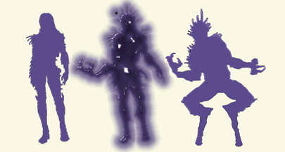

Shape Shifting
"It seemed a slim woman for a moment, Then it was not hair,
but great, curved horns from some wide, uncertain brow, whose
crook-legged owner struggled to shuffle hoofs along the blazing
way. Then something else, An enormous cat, A faceless woman...A
bright winged thing of indescribable beauty, A tower of ashes."
- Corwin, The Guns of Avalon
All whose origins involve Chaos are Shape Shifters. The harsh environment
of Chaos can only be survived in for long by someone with the power
to shift their shape to adapt to the deadly environment. With shape
shifting a character can control any aspect of his shape, he can
assume the form of nearly any creature or element and even take
the form of others.
Shape Shifting is a power gained by birth, it cannot normally
be learned, one is either born a shape shifter or not. Only those
from or near Chaos are true Shape Shifters although many other creatures
can take more then one form.
"I was older than I appeared to be. (Thirtyish, I'd seemed
when I looked at me in the mirror--but now I knew that it was because
the shadows would lie for me.) I was far, far older..."
-Corwin, Nine Princes in Amber
Shape Shifting gives the character the ability to control the stuff
of shadow that makes up his form. This allows a Shape Shifter to
take nearly any form with only two limitations: A Characters form
must obey the laws of shadow around it, and it is harder to shift
one's form the farther from Chaos one gets (due to there being more
laws of shadow as one moves farther from Chaos.) Thus, in The Courts
of Chaos a Shape Shifter has few limitations on how he may change
form. Slipping from one form to another there has few restrictions,
is easy, and requires little or no energy.
Rank System:
The following is a list of abilities commonly known of among the
Lords of Chaos. Characters can attempt to learn some or all of these
abilities, depending on how many points they spend in Shape Shifting.
There are many other abilities as well, although abilities other
then those listed are possessed by few of the family members and
are generally not common knowledge. Characters wanting to have abilities
above and beyond those listed here will need to have more then 40
points in Shape Shifting. The higher level abilities of Shape Shifting
vary from shifter to shifter. The exact abilities a character can
purchase will need to be worked out with the GM.
Shape Shift:
"Except maybe a Lord of Chaos," I replied, as I shifted
my awareness to various points within my body. Rough work. The faster
you do it the more painful it is."
"My arms began to lengthen and I felt my shirt tear across
my back as I leaned forward. The bones in my face shifted about
and my chest expanded and expanded. . . ."
-Merlin, Blood of Amber
Shape Shifters can take nearly any form near Chaos, as the move
farther from chaos changing form becomes more difficult and their
forms become more limited as the number of shadow laws they must
obey increase. To change to a learned Form takes anywhere from a
few seconds to half a minuet depending on how different it is from
the current form, and how much energy the character is willing to
spend to make the change.
He absorbed a chair from the room's corner for extra mass,
changing
shape to accommodate my adult size. As I climbed upon his elongated
torso,
catching a firm hold, he exelaimed, "Ah, Merlin What magics
do you bear
these days?"
-Merlin, Prince of Chaos
It's possible for a Lord of Chaos to raise and lower their weight
and size by absorbing nearby organic material. Adding or subtracting
Strength to a form takes about a second per point added or subtracted.
Characters may add up to their Shape Shifting to their original
Strength or may reduce their size and Strength by any amount, although
reducing size WILL lower Strength. (No Strength 8 flies...)
When creating forms, characters may work in a number
of Features to enhance their form. Features are built in things
like claws, wings, or armor. The Strength and effectiveness of these
features are determined by their description, and to some extent
the ability of the Shape Shifter.
Shift Wounds:
"...My left shoulder hinting and my right leg sore also.
If I could get the pain under control before I retransformed myself
there was a chance that much of it would fade during the anatomical
reshuffling. The process itself would probably leave me pretty
tired, however. It takes a lot of energy, and switching twice
this close together could be somewhat prostrating..."
-Merlin, Blood of Amber
Characters may use Shape Shifting to speed up the healing process
in their body. This will quickly tire the character, but is capable
of healing minor wounds in minuets. There is a danger however, characters
who try to push their body too far or heal too deep of a wound may
find themselves wasting their energy and making matters worse by
needlessly exhausting their body.
Shift Organs:
"I beat that dark blade aside and my lunge was perfect.
The center of its breast was my target. I ran it through.
It howled then, but did not fall. Grayswandir was torn from my
grasp and flames bloomed about the wound. It stood there wearing
them. It advanced a step toward me and I picked up a small chair
and held it between us.
"I do not keep my heart where men do," it said.
-- Corwin vs. Strygalldwir, The Guns of Avalon
This skill allows characters to mix and match organs between forms,
create spare organs, or even come up with totally new ones. This
ability also allows characters to give their forms extra arms or
other limbs. This ability also makes a Lord of Chaos MUCH harder
to kill.
Mimic:
"And yourself?" I continued. "What face would
you put on things?"
"Why, to win your good will I'll match you," he said,
and then he began to laugh.
He threw his head back, and as his laughter rang about me a change
came over him. His stature seemed to increase, and his face luffed
like a sail cut too close to the wind. The hump on his back was
diminished as he straightened and stood taller. His features rearranged
themselves and his beard darkened. By then it was obvious that
he was somehow redistributing his body mass, for the nightshirt
which had reached his ankles was now midway up his shins. He breathed
deeply and his shoulders widened. His arms lengthened, his bulging
abdomen narrowed, tapered. He reached shoulder height on me, then
higher. He looked me in the eye. His garment reached only to his
knees. His hump was totally resorbed. His face gave a final twist,
his features steadied, were reset. His laughter fell to a chuckle,
faded, closed with a smirk.
I regarded a slightly slimmer version of myself.
-Corwin, the Hand of Oberon
Characters at this level can fine tune their features to exactly
match the form of another character or creature. Unless they absorb
more mass however, their Size won't change, and they may end up
slimmer or heavier then those they copy.
Shape Blood:
"Corwin, I have made my decisions and the time has come,"
he said. "Bare your left arm."
I did this, as his form continued to grow in substantiality, looking
more and more regal the while, a strange sadness on his face,
of a sort I had never seen there before.
He took hold of my arm with his left hand and drew his dagger
with his right.
I watched as he cut my arm, then resheathed his blade. The blood
came forth, and he cupped his left hand and caught it. He released
my arm, covered his left hand with his right and drew away from
me. Raising his hands to his face, he blew his breath into them
and drew them quickly apart.
A crested red bird the size of a raven, its feathers all the color
of my blood, stood on his hand, moved to his wrist, looked at
me. Even its eyes were red, and there was a look of familiarity
as it cocked its head and regarded me.
"He is Corwin, the one you must follow," he told the
bird. "Remember him."
-Corwin and Oberon, The Courts of Chaos
Characters may use this ability to shapechange their blood into
any form they themselves can take with the limit that the creature
must be small, usually no more then Amber Strength unless the character
is willing to sacrifice a great amount of Endurance. Creatures shaped
with your blood will have a measure of your powers and strengths,
they can travel through shadow using the powers of their creator
and may have features worked into them as well.
|